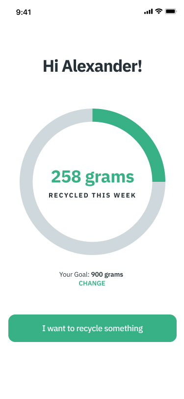
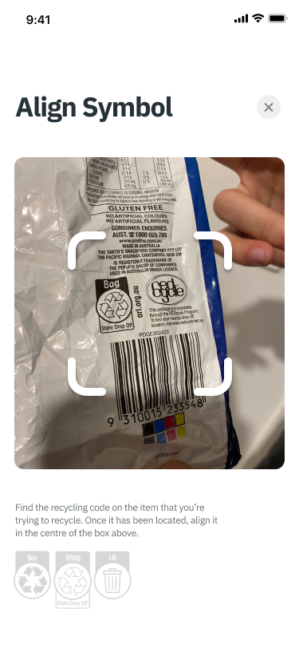
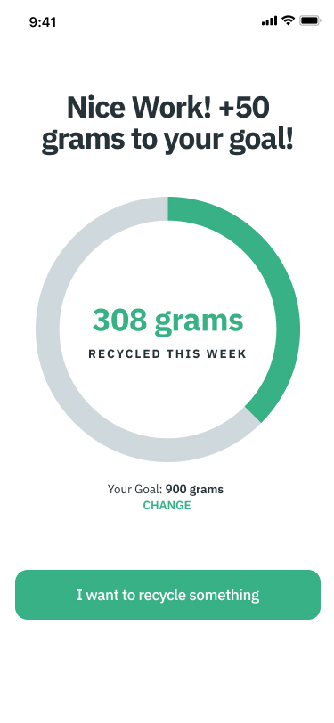
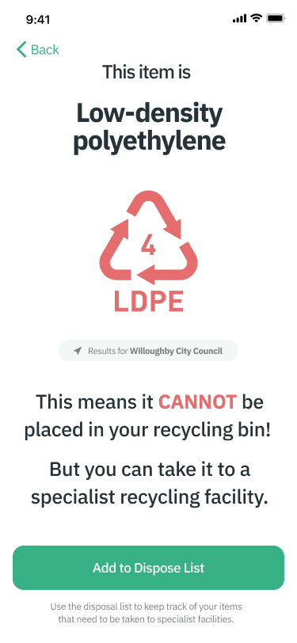
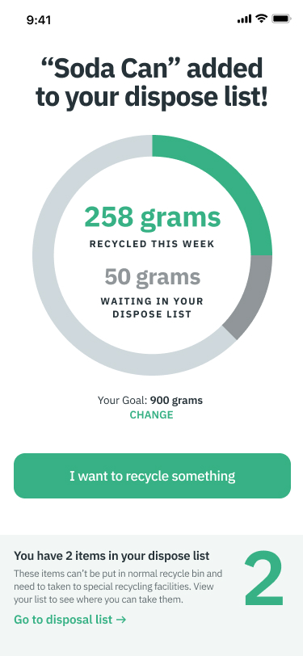
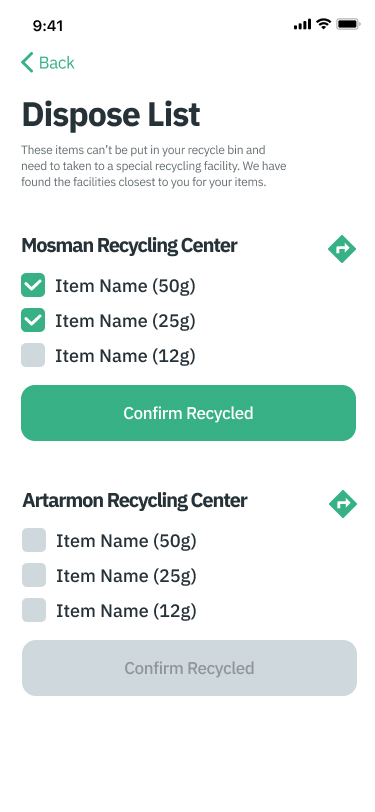

Recycle Assist
Designing a mobile first recycling companion app that identifies materials and surfaces relevant council-specific guidance. The aim was to make users feel confident they are choosing the right bin, and encourage better recycling behaviour via weekly progress tracking and goals.





